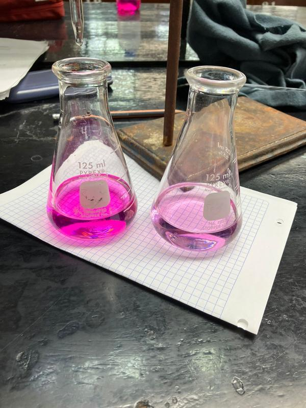

Calculadora de diluciones
Calcula el volumen de solución concentrada que necesitas con la fórmula C₁V₁ = C₂V₂.
Concentración inicial C₁ (mol/L)
Concentración final C₂ (mol/L)
Volumen final V₂ (mL)
Calcular V₁